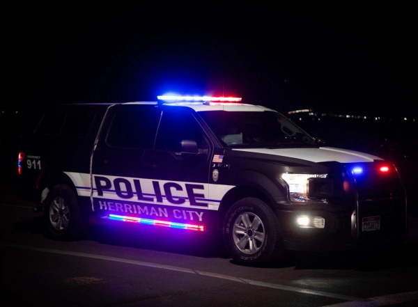

Welcome to Herriman
Welcome to City of Herriman, Utah Chamber of Commerce page. Here you will find useful information on events and activities and employment Opportunities within Herriman town limits.
We invite you to check us out and see the daily events happening in our community and within the town of Herriman.
Herriman City Hall is where you will find all the public offices for the city of Herriman.
Herriman city overview. We have see a lot of new incoming residents moving to Herriman Utah. Within just 2 miles of shopping and dining, Herriman is sure growing.
Herriman Happenings
Black Ridge Resoivor. Come out for a fun community BBQ on Saturday October 22 2022 at 7pm.
Please join us for our community town hall meeting scheduled for Monday October 24 2022 at 7pm. You can also join via zoom as well. Click on the Town Hall Meeting image to join our community meetings every Tuesday at 7pm.
Weather

Sunny and 61 degrees
Herriman History
Herriman was the first settlement in the spring of 1851 by Henry Harriman, Thomas Butterfield and John J. Stocking. These three men built a log cabin each, fenced some land, raised a crop and called their location Butterfield Settlement. They also made a mountain road up what they called Butterfield Canyon, where they found some timber. In the fall of 1853 the settlement was strengthened by the arrival of some twenty other families. This increased the population to 71 souls. The following year a fort, enclosing 21/2 acres of ground, was built of concrete as a protection against Indians, who stole several bands of horses and cattle from the settlers. In the spring of 1853 the settlement was abandoned because of Johnston Army troubles, but was reoccupied the same year when peace was restored. Shortly afterwards the present town site was surveyed and called Herriman in honor of Henry Harriman. Since then the population has increased slowly as scarcity of water has retarded the growth of the settlement to a great extent. Leadership in Herriman settlement was first held by Henry Harriman, next Thomas Butterfield and in 1855, McGee Harris, who took charge until 1858. Alexander F. Barron served until 1861, Henry Arnold until the spring of 1866. Ensign I Stocking for ten years until 1876. Reorganized on June 17, 1877, James Crane served until July 6, 1886 when he died. William C. Crump succeeded him until 1886, Robert Danzie in 1897, James S. Crane until June 1, 1906, Thomas Butterfield, 1916 Franklin T. Crane until Dec 31, 1930.
Top 3 Businesses in Herriman

Fizz Drinks
Fizz Drinks in Herriman.
801-432-7188
13308 S 5600 W Herriman, UT 84096
Fizz DrinksThe Real Up House
The Real Up Housem from Disney's movie Up.
Book your photo shoot with the house from Up.
Herriman Farmers Market
Farmers Market for Herriman Utah.
801-446-5323
5373 Main Street Herriman, UT 84096
Herriman Farmers MarketEmployment Opportunities
Are you looking for a career change? Interested in working for the town of Herriman? We have several opportunities awaiting you. Please click on join us at the top to see current employment opprtunities within Herriman.
We offer excellent benefits with our opportunities within the City of Herriman.